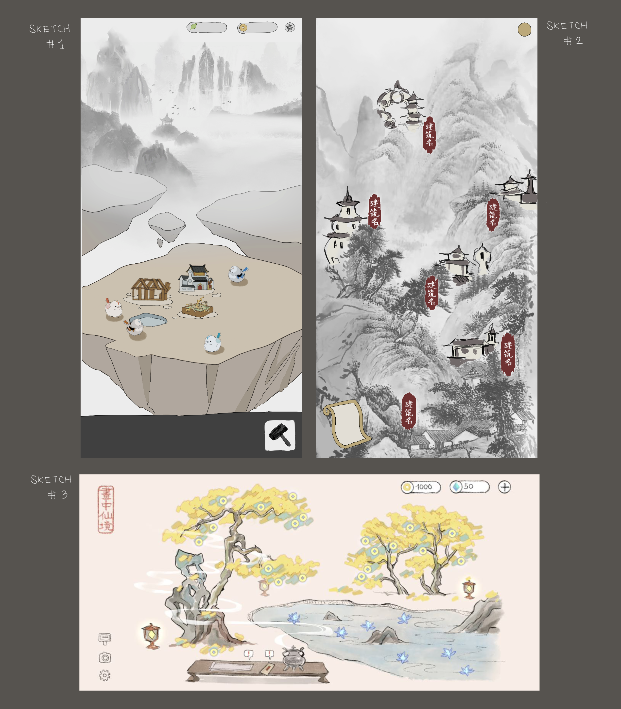
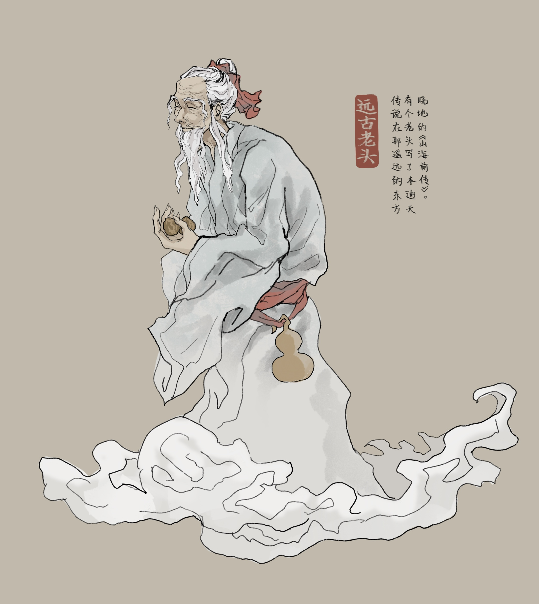
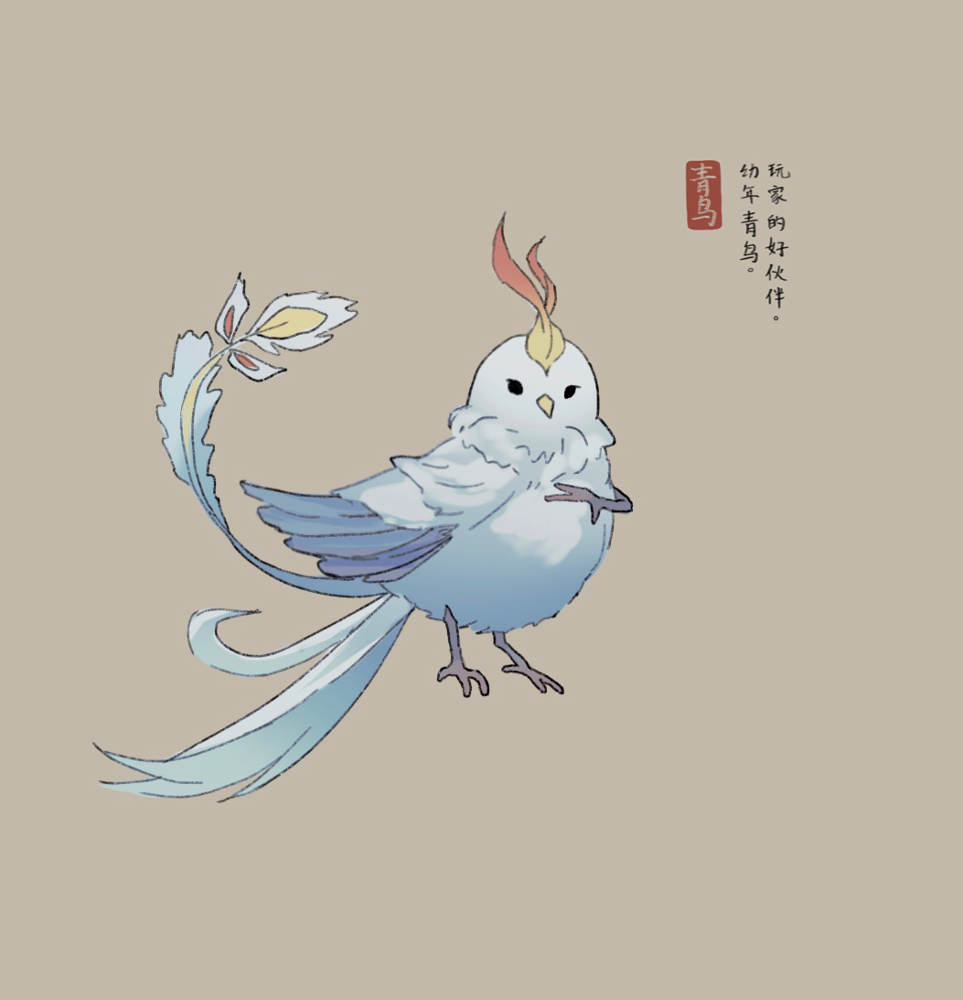
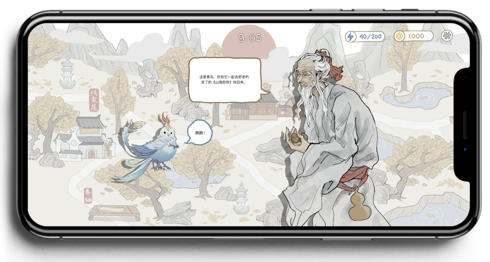
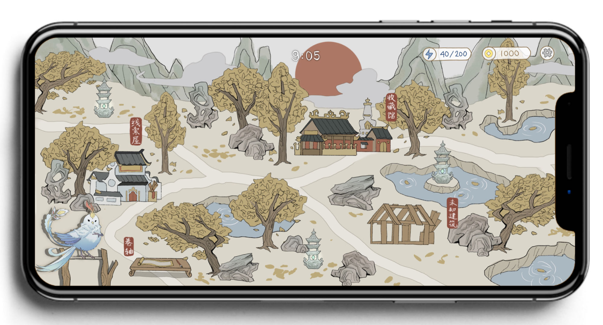
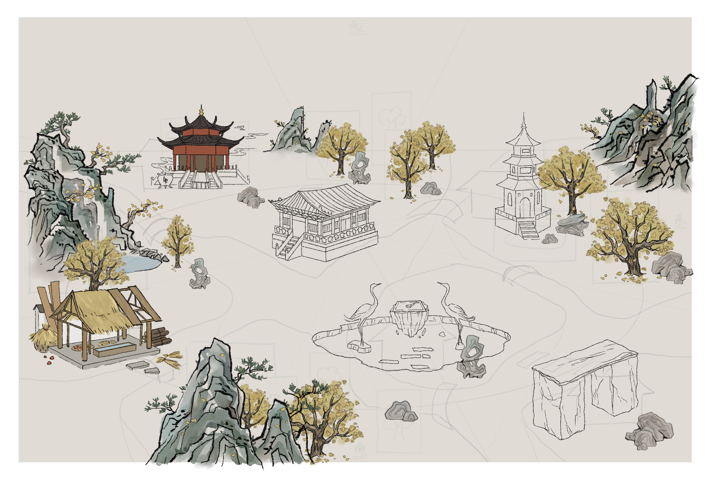

A mobile game based on chinese myths and creatures.
Skills: #Digital Art (PS, Procreate), #UI Design (Figma), #Game Design
We all know at least some about mythical creatures and stories: most from celtic or greek. There are many games, literature, or movies based on these mythologies. However, not many of them have Chinese mythical creatures (well, except Chinese Dragons). Thus, me and a few friends decided to develop a mobile game based on Shan Hai Jing (山海经), the compilation of mythical beasts of China. We hope that players could learn more about Chinese culture and have fun with these creatures.
As the founder of this project, I’m mainly responsible for designing the gameplay and all visual elements. In the following, I will present the visual designs - including sketches, character designs, and user interface - and how things change as we develop the gameplay.
PART I - Brainstorming & Sketching
In the very beginning, I brainstormed 3 potential gameplay and created 3 corresponding sketches:

Sketch #1
- Keyword: crafting & simulation.
- Game experience: users will collect materials and build a residential area for mythical creatures. As you feed and bond with them, they’ll tell you more about themselves.
- As you can see in the sketch, there is a functional building, a wooden house, a lake, and a grassland.
- Functional building: users will operate the functional buildings to collect coins. Can unlock new buildings clicking on the icon at the bottom.
- House: a dorm for the creatures. Users can use coins to unlock more space. In the beginning there are only 4 spaces to host 4 creatures, but when users unlock new space, a random creature will arrive in town.
- Lake: Creatures can drink water in the lake. Users have to clean the lake once in a while using coins.
- Grassland: Food for creatures. Users have to refill stock using coins.
- At the top right corner, there are 2 boxes displaying the current value of prosperity and coins. To gain more coins, users have to build more functional buildings and keep them operating. To keep a good level of prosperity, users have to expand the land and constantly clean the lake and refill food. When prosperity is too low, creatures may permanently leave your game.
Sketch #2
- Keyword: visual novel.
- Game experience: Users will read stories by clicking on the bottom-left icon, and unlock different buildings indicated by the red tags.
- Building examples:
- Museum: view different mythical creatures in Shan Hai Jing.
- Library: see description of different geographical locations in Shan Hai Jing.
- Shrine: inspired by the Chinese calendar, users will draw an advice of the day.
- The main experience is to unlock more stories and learn about mythical creatures, the buildings are supplements to the reading experience.
Sketch #3
- Keyword: casual.
- Game experience: a simplified combination of the ideas presented in sketch 1&2. Users will collect coins from the tree to unlock stories in a random order. Users will also collect lotus crystals to unlock creatures. Different to sketch #1, unlocked creatures will not be visually visible in the page but they’ll exist in spirit form which can be viewed by clicking on the incense burner (located on the table). There are also many rare stories that can only be unlocked when the prerequisite spirit is in the incense burner.
PART II.A - Version 1 Overview
After a few rounds of iteration, we decided to develop our MVP in Figma based on sketch #1. We also added more features and incorporated different ideas from the other 2 sketches. Here is an overview of changes:
- The original document of Shan Hai Jing is a compilation of scattered stories, users may find it very confusing when reading. Thus, we decided to create an original background story with close reference to Shan Hai Jing for a better experience.
- The screen should be vertical for aesthetic purposes (reference to sketch #3).
- Keep the overall simulation experience in sketch #1, but focus on the creatures instead of crafting and building the residential area. As a result of this decision, we removed the process of manual building - the buildings will be in a preset position (similar to sketch #2), the only thing users do is to unlock them as the story progresses. That said, users still have to collect materials to unlock new territory.
New Background Story
You (player) are the guardian of the spirits in Shan Hai Jing. However, due to an accident, all the spirits are lost or damaged except one. As the guardian, you must find and repair all other spirits, and finally put them back to rest in the archive.
In the beginning of the story (and the game), you encountered a mysterious old man. He gave you an incense burner, and when you touch it you’ll enter a divinatory space (represented by the map in the game.) In this world, the spirits will revive into their original form and you can understand their language. Since most spirits lost their memories, after finding them you’ll also have to help them restore their memories (by simulating and making the space more prosperous) before they’re willing to go back to the archive.
The mysterious old man disappeared and you decided to try with the only spirit in hand. You entered the divinatory space and the spirit turned into a blue parus. The bird does not remember anything except its name - “Qing Niao (青鸟)” - but it still wanted to help you to find other spirits. After a brief discussion, you made a plan: Qing Niao will explore everyday and bring back random spirits, and your job is to manage the divinatory space and cure these spirits.
PART II.B - Version 1 Visual Components
Character Design


Main characters: Mysterious old man & Qing Niao
Map

The divinatory space
Interface Preview
Since we haven’t published the game, I’ll only present 2 screenshot previews of the product.

Preview 1: Qing Niao and the mysterious old man talking about how to restore the spirits.

Preview 2: Main page of the game. Users can click on Qing Niao at the bottom left corner and sent it on a spirit scout. When Qing Niao is not at home, users can operate the buildings in the space: collect materials, operate the buildings, bond with other spirits in the space, and improve prosperity.
PART III - Current progress
We completed the first round of user testing using the Minimal Viable Product designed with Figma. Currently, my teammates are developing the game in Unity2D and we'll run our beta testing early next year.
On top of that, I'm refining the functionalties of the buildings and creating a more detailed version of visual elements.

Current progress - preview
BACK TO WORKS
© 2022 Jeff Huang All Rights Reserved